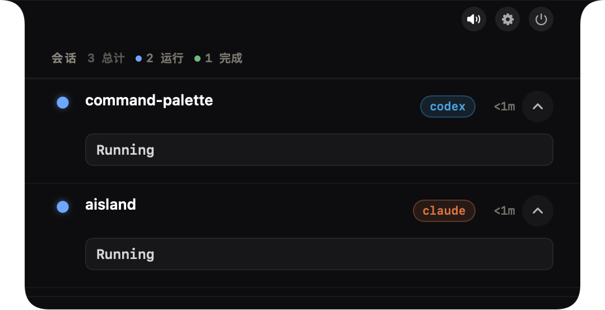
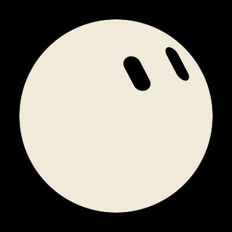
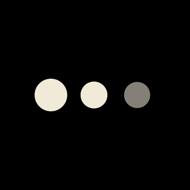
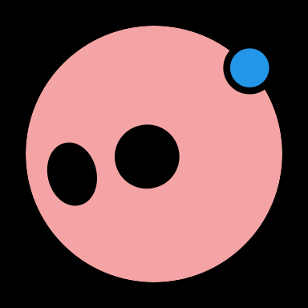
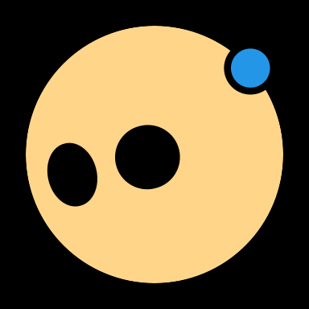
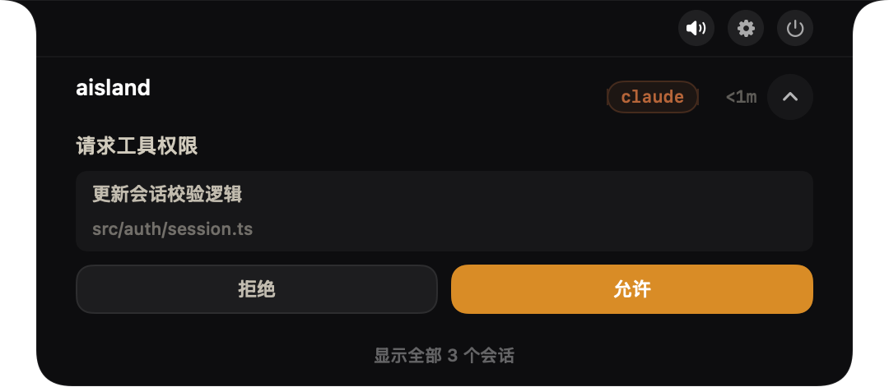
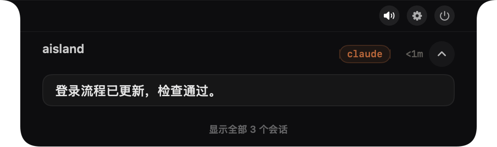

[ 01 / OBSERVE ]

多个 Agent，一眼看清。
运行、等待输入、完成。把分散的会话状态聚在一起，随时知道谁需要你。

AISLAND_NATIVE MACOS / LOCAL FIRST / OPEN SOURCE
让 Agent 的每一步，都有回应。
思考、等待、完成。
让状态在 Mac 刘海里有了表情。
把注意力留给眼前的工作。
思考时轻轻脉冲，等待时柔和眨眼。
授权与回答各有状态色，关键时刻提醒你。





运行、等待输入、完成。把分散的会话状态聚在一起，随时知道谁需要你。

查看支持的权限请求，允许或拒绝；接住 Agent 的提问，让工作继续推进。

从会话入口回到对应终端或桌面应用。可用动作随 Agent 和接入方式而不同。
Swift 与 AppKit。刘海屏和外接屏各有适配。
无需账号，无遥测。数据留在你的 Mac。
GPL-3.0 开源。阅读源码，打造自己的岛。
YOUR NEXT SESSION STARTS HERE.
macOS 14+ · Apple Silicon / Intel · v0.1.0 · 尚未 Apple 公证